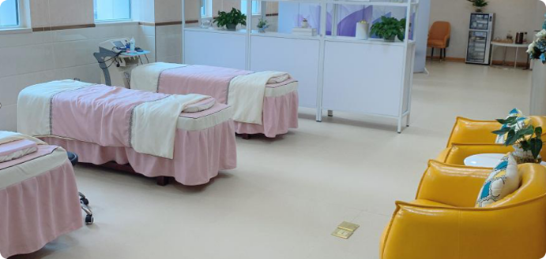

服务内容
服务内容

产康服务

我中心引用国际上先进的医疗产后康复设备（伟思、普林格尔等），采用国际伊美德儿标准，打造女性全生命周期智能健康管理，开设子宫康复、盆底康复、腹直肌分离治疗、产后熏蒸、产后疲劳恢复、产后腰酸背痛调理、腋下淋巴护理、心理减压、催乳、熏蒸等产康项目，有效促进生殖系统、盆底肌肉、筋膜组织恢复，助您重返健康美丽。
电话
服务内容
我中心引用国际上先进的医疗产后康复设备（伟思、普林格尔等），采用国际伊美德儿标准，打造女性全生命周期智能健康管理，开设子宫康复、盆底康复、腹直肌分离治疗、产后熏蒸、产后疲劳恢复、产后腰酸背痛调理、腋下淋巴护理、心理减压、催乳、熏蒸等产康项目，有效促进生殖系统、盆底肌肉、筋膜组织恢复，助您重返健康美丽。